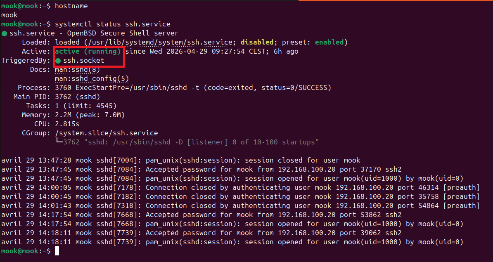
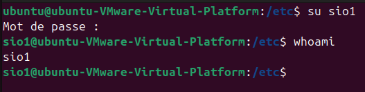
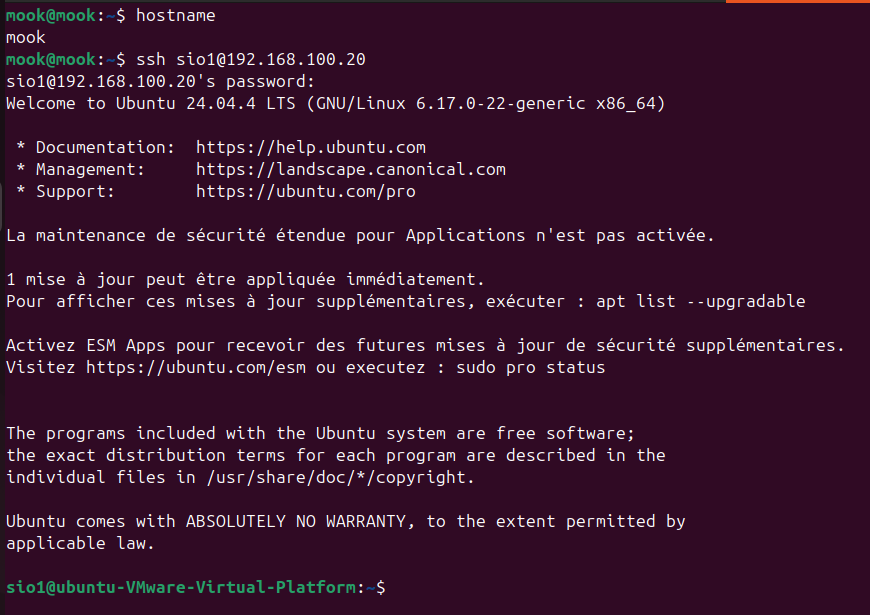
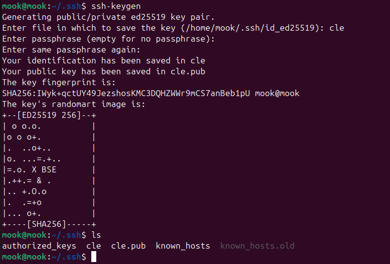
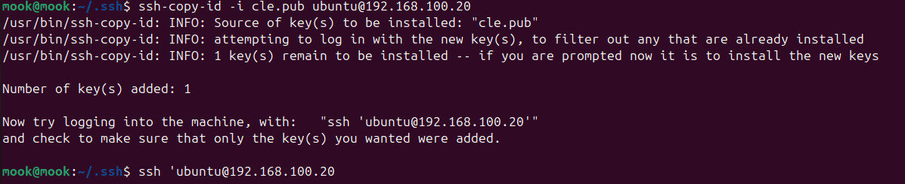
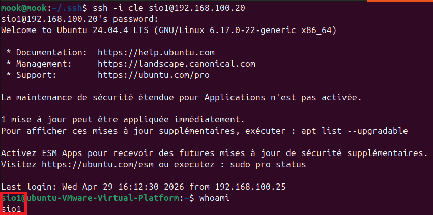
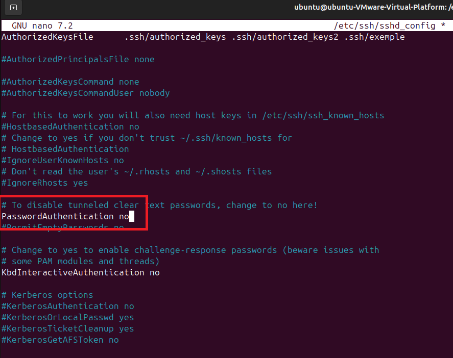
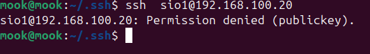

La société Infoplus a mandaté la mise en place d'un accès distant hautement sécurisé pour administrer son serveur Linux. En l'absence de VPN (IP dynamique), l'objectif contractuel est de garantir une connexion sans mot de passe, fondée sur une authentification par paires de clés asymétriques et un durcissement complet du service OpenSSH.
Installation du paquet openssh-server et vérification de l'état actif (running) du service sur le port 22.

Création du compte d'administration non-privilégié sio1 pour isoler les accès et bannir l'usage direct de root.

Validation de la liaison réseau initiale depuis le poste client en testant l'ouverture de session avec mot de passe.

Génération de la paire de clés asymétriques sur le poste client (clé privée locale id_rsa et clé publique id_rsa.pub).

Exportation sécurisée de la clé publique client vers le fichier ~/.ssh/authorized_keys du compte sio1.

Épreuve de connexion directe sans saisie de mot de passe : l'authentification cryptographique par clé est validée.

Verrouillage de /etc/ssh/sshd_config : désactivation du login root et interdiction formelle des mots de passe.

Tentative de connexion depuis un client sans clé publique : le serveur refuse catégoriquement l'accès (échec attendu).

Grâce à cette configuration durcie, le serveur Linux d'Infoplus est immunisé contre les attaques par force brute et dictionnaire sur le port SSH. Seuls les postes de travail détenant la clé privée correspondante peuvent négocier l'ouverture d'une session chiffrée.
| N° | Cas de Test Réalisé | Résultat Attendu | Résultat Obtenu | Statut |
|---|---|---|---|---|
| 1 | Démarrage et écoute du service OpenSSH | Service actif (running) sur port 22 | sshd actif et joignable | CONFORME |
| 2 | Création du compte utilisateur de travail | Compte sio1 opérationnel |
Compte et /home/sio1 créés | CONFORME |
| 3 | Vérification initiale par mot de passe | Invite de commande accessible | Session ouverte avec mot de passe | CONFORME |
| 4 | Génération de la bi-clé asymétrique client | Fichiers id_rsa et id_rsa.pub |
Paire de clés générée | CONFORME |
| 5 | Déploiement de la clé publique sur le serveur | Clé inscrite dans authorized_keys |
Clé copiée avec succès | CONFORME |
| 6 | Authentification directe par clé asymétrique | Accès direct sans mot de passe | Session ouverte immédiatement | CONFORME |
| 7 | Durcissement configuration sshd_config |
PasswordAuth no / PermitRoot no | Paramètres appliqués et rechargés | CONFORME |
| 8 | Épreuve d'intrusion sans clé privée | Rejet formel de la connexion | Permission denied (publickey) | CONFORME |
Ouvrir le terminal depuis le poste autorisé :
Vérification préalable des permissions requises : chmod 600 ~/.ssh/id_rsa.
Dans Windows PowerShell natif :
Avec PuTTY : charger la clé convertie (.ppk) dans SSH > Auth > Credentials.
1. Permission denied (publickey) : Vérifiez que vous utilisez bien le poste détenteur de la clé privée ou que le fichier de clé n'a pas été déplacé.
2. Connexion timed out : Vérifiez la joignabilité réseau de l'adresse IP du serveur et que le port 22 n'est pas filtré en amont.